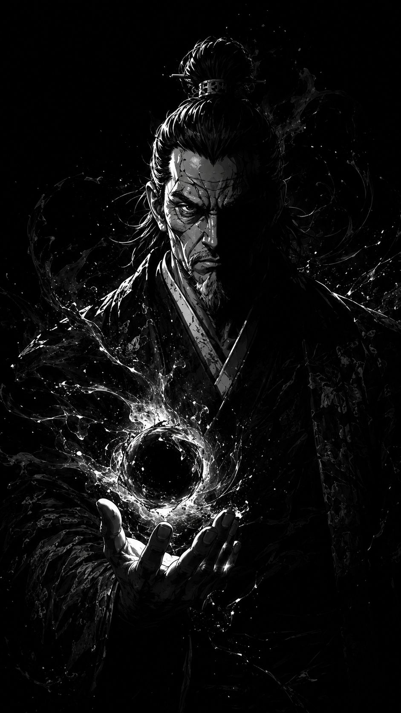

“Um império não sobrevive através da bondade. Sobrevive através do controle.”
O Homem Que Transformou O Medo Em Governo
O Imperador Hayashi é o soberano do maior império já construído nas regiões centrais do continente. Reverenciado por nobres, temido por generais e observado silenciosamente pelos clãs do norte, Hayashi tornou-se símbolo absoluto de autoridade imperial.
Diferente de governantes impulsivos ou guerreiros movidos pela emoção, Hayashi governa através da inteligência, da paciência e da manipulação. Seu olhar raramente demonstra raiva. Sua voz raramente se altera. E talvez seja exatamente isso que o torna tão assustador.
Desde jovem foi preparado para governar. Educado entre estrategistas militares, filósofos imperiais e sacerdotes da corte, Hayashi aprendeu cedo que impérios não são mantidos através da compaixão.
São mantidos através do medo.
Ao longo dos anos expandiu o domínio imperial utilizando alianças, guerras silenciosas e acordos políticos brutais. Clãs que recusavam submissão desapareciam misteriosamente. Generais que questionavam ordens eram substituídos sem explicações.
Contudo, mesmo cercado por poder, Hayashi vive atormentado por algo que poucos conhecem.
O norte.
Os relatórios envolvendo Hikogu no Mori, os Kurotsuki e os acontecimentos nas montanhas proibidas fizeram o imperador compreender que existe uma ameaça além da política, além dos exércitos e além do próprio império.
Algo antigo. Algo impossível de controlar.
Embora publicamente negue qualquer superstição, Hayashi mantém investigadores secretos observando movimentações ligadas aos Kurotsuki há muitos anos.
Ele sabe que a maldição existe. E sabe que, caso ela se espalhe, nem mesmo o império sobreviverá.
Sua relação com Daikan Onizuka é baseada em conveniência política. Ambos compartilham interesses, mas Hayashi jamais confiou completamente nele.
O imperador compreende uma verdade perigosa: homens cruéis costumam acreditar que podem controlar monstros.
E normalmente descobrem tarde demais que estavam errados.
Para muitos, Hayashi é apenas um governante frio. Mas dentro do salão imperial, longe dos olhos do povo, existem rumores de que o imperador já viu algo vindo das montanhas do norte.
Algo que jamais conseguiu esquecer.
“O verdadeiro poder não está em destruir homens. Está em fazê-los obedecer.”